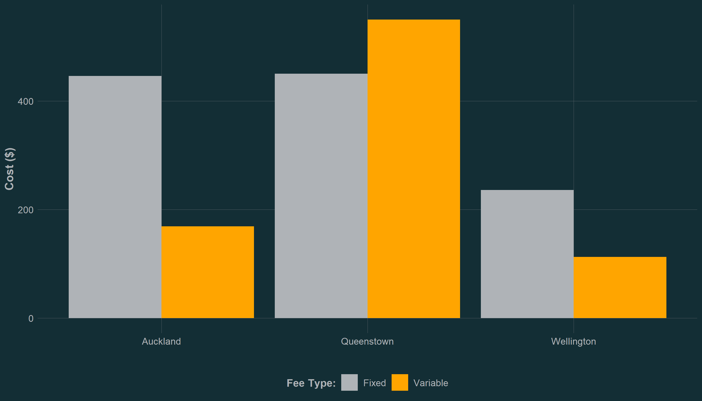
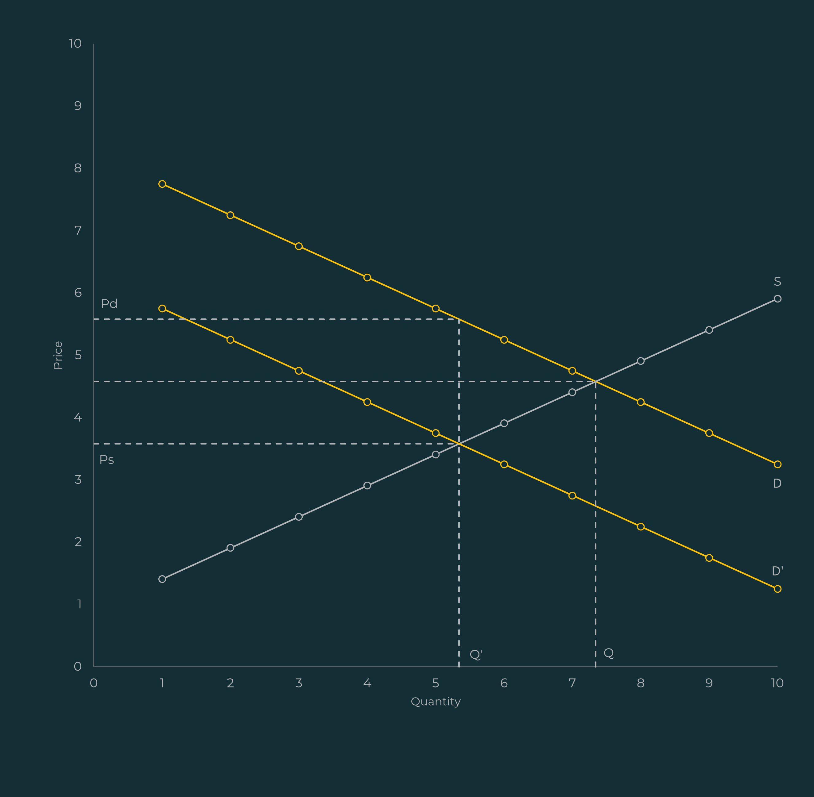
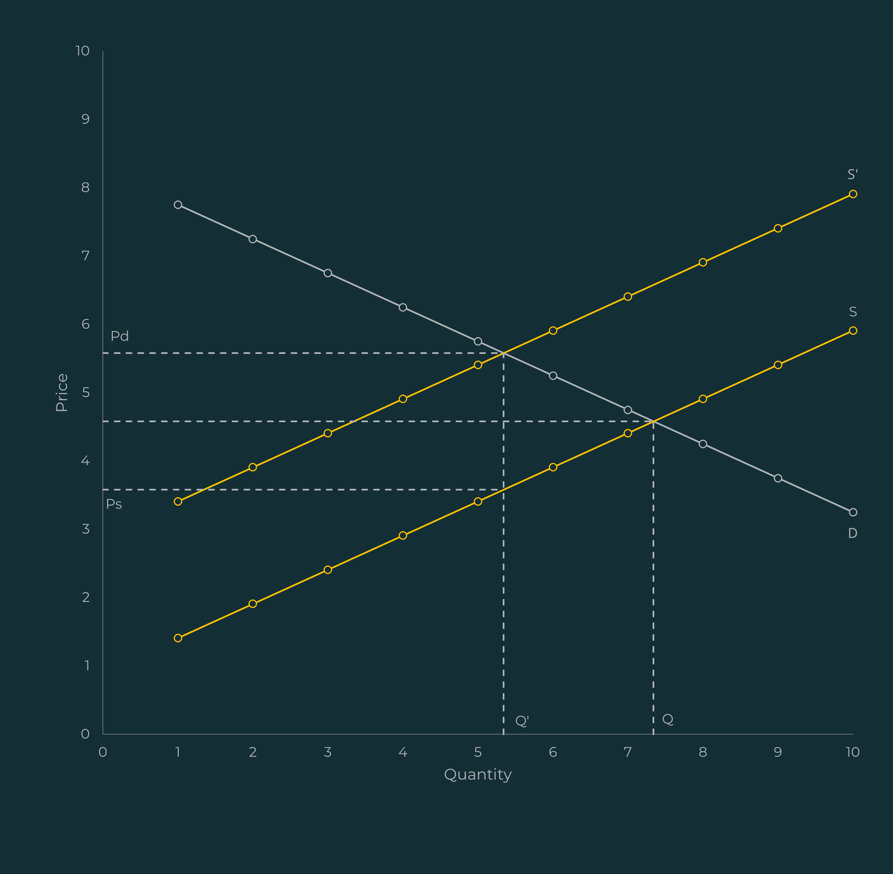
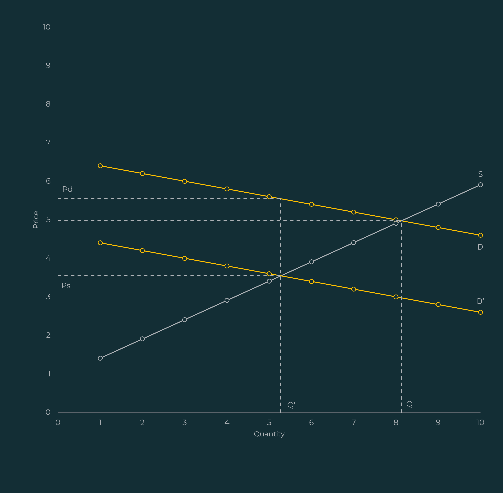
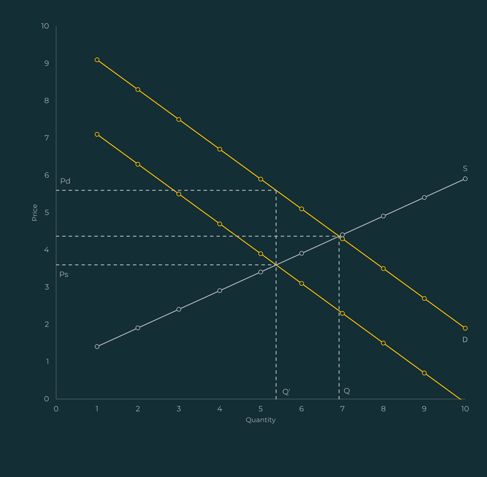

QLDC plans to increase its fees for restaurants and cafés renting public outdoor spaces for sidewalk tables and seating.
Hospitality business owners are outraged at the proposed change. According to one hospitality business owner, “[the fee] is going to be $51,000... [the fee is] massive. It doesn't add up math-wise.”
According to the QLDC annual report, there are two costs hospitality businesses must pay for outdoor dining:
According to Radio New Zealand, the variable fee used to be $160 per m².
Queenstown hospitality businesses appear to be getting a rough deal. Hospitality businesses in Auckland and Wellington pay up to $169 and $113 per m² respectively, compared to $550 in Queenstown.

The cost of sidewalks
Sidewalks require land, concrete, and labour. Someone must purchase each of these inputs to be able to produce a sidewalk.
When should individuals and businesses get a sidewalk?
Suppose that there is one hospitality business, one individual, and no government.
The business’ objective is to maximise its profit by choosing how much dining services to offer and the method it uses to produce the services. The business can choose between offering dining services either:
Assuming that both methods are feasible and result in equal output, the business will choose whichever method costs less.
Likewise, an individual may choose between:
The individual will choose whichever option provides the most happiness.
Splitting the cost of the sidewalk
It is possible that neither the business nor the individual would purchase the sidewalk by themselves. However, if the joint benefits of the sidewalk exceed the costs, the business and the individual could jointly purchase the sidewalk.
Definition A: Public, private, and mixed goods
Economists distinguish public goods and private goods using two conditions, a public good must be:
e.g., A military created to protect the boarder. The protection of one individual does not detract from the protection available to others.
e.g., A shipping company that builds a lighthouse to help with navigation. It is not possible to exclude other shipping companies from using the lighthouse to navigate.
Private goods must be:
e.g., An individual eating an apple. The individual eating the apple means that it is no longer available to another individual.
e.g., A concert ticket. It is possible to exclude individuals from the concert who do not have tickets.
Mixed goods have characteristics of both public goods and private goods. For example, they may be:
Sidewalks and other public outdoor spaces are mixed goods
Consider a city with 100m2 of sidewalk, a hospitality business, and an individual.
If the sidewalk is common property, neither the business nor the individual can stop the other from using the sidewalk. This makes the sidewalk non-excludable. Note that a sidewalk is only weakly non-excludable because, in-theory, the firm or individual could pay a security guard to prevent another from using it. But in practice, the cost of excluding people from a sidewalk is higher than the benefit of excluding the other from the sidewalk.
If the business uses 50m2 of sidewalk for outdoor dining, then that 50m2 of sidewalk is unavailable to the individual. In other words, the sidewalk is rivalrous.
The free-rider problem
The best outcome for the business/individual is if the other pays for the whole sidewalk. This way they can enjoy the sidewalk for no cost because the sidewalk is non-excludable.
If the individual pays for the sidewalk, the business can reduce its costs, use the sidewalk to produce dining services, and increase its profit.
External benefits can lead to market failure
Definition B: Externalities
Externalities arise when the consumption or production activities of one agent effects the utility or production function of another agent.
Both the individual and the business are incentivised to wait for the other to purchase the sidewalk.
The decision to purchase the sidewalk did not consider the external benefits to the business. As a result, even if the combined benefit to the individual and the business exceeds the cost, the sidewalk will not be purchased if the individual’s benefit alone is insufficient to cover the cost.
The mixed-good characteristics of the sidewalk may also lead to external costs
Suppose a government provides 100m2 of sidewalk to the city. The benefit of using each additional square metre of sidewalk is positive and costs nothing to the business.
The business will use all the sidewalk thereby maximising its benefit for no cost.
However, the congestion caused by the business, imposes an external cost on the individual who must now walk on the road placing them in danger.
External costs can lead to market failure
The businesses decision to use all the sidewalk did not consider the external cost to the individual. As a result, even if the additional benefit to the business from using the last strip of sidewalk is less than the external cost imposed on the consumer, the business will still use all the sidewalk.
Market failure provides economic rationale for the government
A government can step-in and correct the market failures by providing the sidewalks and controlling congestion. This is the allocative function of a government.
Government can raise taxes to pay for sidewalks
Definition C: The principles of tax
Taxes are collected by governments to not only finance their expenditure but also for the purposes of stabilisation and allocation.
A user-fee provides the government with the ability to correct the undersupply of sidewalks
A user-fee is a tax based on the benefits-received principle. It is a popular approach to correct market failures caused by mixed goods.
The benefits-received principle states that each agent’s tax contributions should be based on the benefits received from the good.
In other words, the government would raise the revenue necessary to provide the sidewalk by taxing each agent proportional to the benefits they each receive from having access to the sidewalk.
A tax provides the government with the ability to correct the overconsumption of sidewalks
In theory, the government could charge a fee, on sidewalk congestion, which reduces the businesses’ level of congestion to the point where the joint benefits of the business and individual are maximised.
In practice, measuring the benefits of sidewalks and the costs of congestion is difficult, and the cost associated with deriving this value is prohibitive
To avoid the cost associated with deriving the true benefit-received and the external cost of congestion, a government might base the fee on an estimate of the benefit-received and external cost of congestion.
Other roles of a government
The government will want to weigh up its different objectives before setting the tax.
Another role of the government is to ensure that the distribution of income, wealth, and welfare aligns with what the public considers just.
The solution to the market failure problem may be efficient but it may not be desirable from a distribution perspective. For example, the taxes will reduce the production of outdoor dining, and some employees of these firms may lose their jobs.
At the end of the day, does it really matter who pays?
Any tax ought not to be thought of as a tax on businesses or a tax on individuals. Instead, think of a tax as being on transactions between businesses and individuals.


The figures above show that regardless of who pays the tax, the price individuals pay increases, and the price paid to businesses decreases. As expected, the quantity consumed, and the quantity supplied decreases.
Note, that in both figures, the change in price/quantity is the same regardless of who pays.
However, outdoor dining fees impose different economic costs depending on each agent’s sensitivity to price changes


Whether individuals or businesses bear the economic cost of the fee depends on their relative responsiveness to changes in the price.
These figures show that if individuals are less responsive to an increase in outdoor dining fees, by only slightly reducing their amount of outdoor dining, then businesses bear relatively less of the economic cost of the fee through reduced sales.
What does Queenstown get for paying its taxes?
Financial statements may provide clues.
Total revenue from user-charges was $34 million. Some proportion of revenue from user-charges should come from the outdoor dining fees.
In terms of expenditure, $100 million was spent on roading additions and there was $20 million of roading depreciation. A portion of these expenses should come from sidewalks.
Based on these rough approximations, QLDC is spending more than it is collecting in user-charges. However, these approximations contain biases that cannot be ignored. Therefore, making judgements based on this information is risky.
So, do Queenstown hospitality business owners have the right to complain?
From an economist’s perspective
The appropriate fee, for using outdoor public spaces for dining services, depends on whether:
In practice, measuring these factors is challenging and cost prohibitive.
A possible approach to setting the fee
In the absence of complete information, QLDC could at least estimate these factors and try to set its fee accordingly.
Is the proposed fee appropriate?
On one hand, QLDC’s variable fee for outdoor dining is more than double that of Auckland City Council (ACC) and Wellington City Council (WCC). Without evidence or theoretical justification that benefits and costs in Queenstown are significantly different, there is no rationale for this disparity. Either QLDC is overcharging or WCC and ACC are undercharging.
On the other hand, individuals in Queenstown may pay a higher share of the fee. In theory, a high proportion of Queenstown’s outdoor dining customers are wealthy travellers. If this group continues to go to restaurants regardless of the price increase, restaurants can shift more of the outdoor dining fee onto individuals through higher prices.